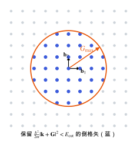

平面波基组与截断能
周期体系为什么用平面波，截断能怎样控制基组完备性，Pulay 应力从哪里来。
直观阅读需要
- 傅里叶分析：周期函数可以写成傅里叶级数
只是提示，不需要先读完才能往下看。
直觉直观解释
晶体是周期的。Bloch 定理说，周期势中的电子波函数可以写成“平面波 × 周期函数”。周期函数又可以展开成傅里叶级数，每一项是一个以倒格矢 \mathbf{G} 为波矢的平面波。所以平面波是周期体系最自然的基组。
它有几个好处：
- 基组只由一个数控制：截断能 E_{\mathrm{cut}}。提高它，结果系统地趋于完备极限。
- 基函数不依赖原子位置，原子移动时基组不变，力的计算没有 Pulay 项（见 Hellmann–Feynman 定理：力与应力）。
- 可以用快速傅里叶变换 (FFT) 在实空间和倒空间之间切换。
代价是：描述核附近的尖锐结构需要很多平面波，所以要配合赝势或 PAW（见 赝势与 PAW 方法）。另外，真空区域也要付出同样的平面波代价。

| 符号 | 是什么 | 图里对应 |
|---|---|---|
| \mathbf{b}_1, \mathbf{b}_2 | 倒格子基矢 | 原点处的黑色箭头 |
| \mathbf{G} | 倒格矢，每个点对应一个平面波 | 网格点 |
| G_{\max} | 截断球半径，由 E_{\mathrm{cut}} 决定 | 橙色圆与箭头 |
| 蓝点 | 进入基组的平面波 | 圆内的点 |
| 灰点 | 被截掉的平面波 | 圆外的点 |
定义与公式数学与推导
截断球内的平面波个数大约是
其中右边是半径 G_{\max} 的球体积除以每个倒格点占的体积 (2\pi)^{3}/\Omega。所以基组大小与晶胞体积成正比、与 E_{\mathrm{cut}}^{3/2} 成正比。
Pulay 应力
变胞时晶胞形状改变，倒格矢 \mathbf{G} 跟着变。如果保持 E_{\mathrm{cut}} 不变，截断球内的平面波个数会随体积变化，基组不再是同一个。这样算出的能量–体积曲线带有基组不完备的系统误差，表现为偏负（压缩方向）的虚假应力，称为 Pulay 应力 [VASP Wiki: Pulay stress]。
FFT 网格
密度 n = \sum|\psi|^{2} 含有最高 2G_{\max} 的傅里叶分量，所以实空间 FFT 网格需要能表示 2G_{\max}；网格不够会产生混叠误差（wrap-around error）。VASP 根据 ENCUT 和 PREC 自动选择网格 [Kresse & Furthmüller 1996]。
在本研究线里的样子对应与边界
常见坑对应与边界
- 变胞优化只做一次：基组对应的是初始晶胞，最后要用优化后的晶胞重新开始优化，直到晶胞不再明显变化。
- 不同 ENCUT 的能量直接比较：只有同一 ENCUT 下的能量差才有意义。
- 只看总能收敛：应力对 ENCUT 的收敛慢得多。
检验自己对应与边界
参考资料
论文Payne et al. 1992
尚未实际查阅，目前只是拟查阅书目
论文Kresse & Furthmüller 1996
尚未实际查阅，目前只是拟查阅书目
官方文档VASP Wiki: ENCUT
尚未实际查阅，目前只是拟查阅书目
官方文档VASP Wiki: Pulay stress
VASP Wiki, Pulay stress（基组不完备导致的应力误差）
尚未实际查阅，目前只是拟查阅书目
分类电子结构理论 · 概念 · 状态：草稿